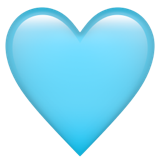

Sobre o Projeto V.I.D.A.S
O V.I.D.A.S é um projeto social que leva alegria, esperança e amor para crianças com câncer, promovendo festas, eventos e momentos que ajudam a sair um pouco da dura realidade do tratamento.
Como tudo começou
2022 — A primeira festa*Um pequeno grupo de voluntários organizou a primeira ação para crianças em tratamento, e percebeu o tamanho do impacto de um dia de alegria.
2023 — Primeiras parcerias*O projeto firmou parcerias com hospitais e clínicas para chegar a mais crianças com regularidade.
2024 — Crescendo junto*Novos voluntários, novos eventos temáticos e a marca V.I.D.A.S ganhando força nas redes sociais.
Hoje*Mais de 150 crianças e famílias já viveram um dia de festa com o V.I.D.A.S — e queremos chegar a muito mais.
*linha do tempo de exemplo — substituir pela história real do projeto
O significado de V.I.D.A.S
V
Vitória
I
Igualdade
D
Deus
A
Amor

S
Saúde
Quem faz a festa acontecer
Um time pequeno, movido por uma causa grande — e por gente que doa o seu tempo de coração.
*números de exemplo — substituir pelos dados reais
Tipos de Ações Realizadas
- Festas Temáticas 40%
- Eventos Comemorativos 30%
- Ações em Hospitais 20%
- Datas Especiais 10%
Crescimento do Impacto
Quem viveu, conta
Por algumas horas, meu filho só pensou em brincar. Foi como se o hospital tivesse ficado longe, só por aquele dia.
Como voluntária, vejo de perto o quanto uma tarde de festa pode mudar o humor de uma família inteira.
Apoiamos o V.I.D.A.S porque vemos o cuidado real com cada criança e cada família atendida.
Ajudar o próximo é um ato de Amor!
Faça parte você também, nos ajude a compartilhar sorrisos 💙
Quero Ajudar